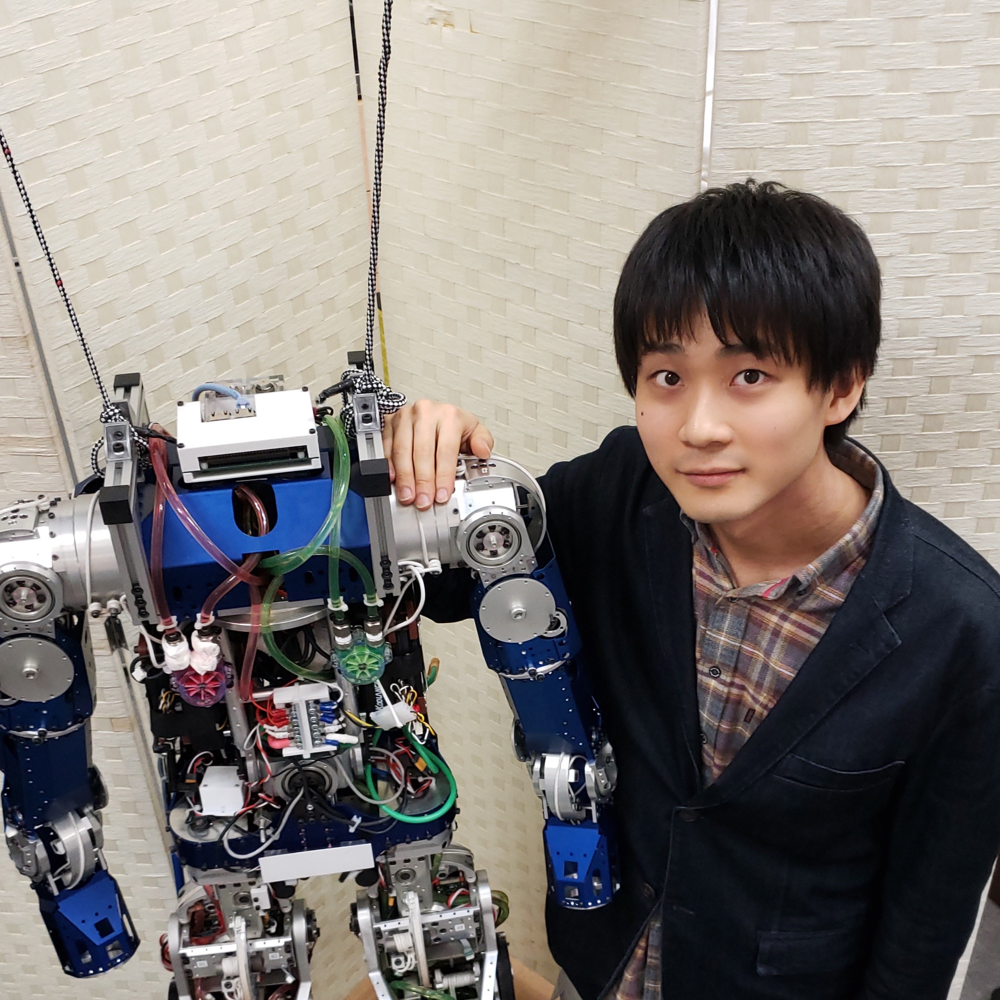

概要
Humanoid Virtual Athletics Challenge (シミュチャレ）2026 に合わせてチュートリアルを開催致します． 人型ロボットを動かすための「気になるソフトウェア技術」を使いこなせるようになるためのまたとない機会ですので， 是非ふるってご参加ください．チャレンジに参加登録されていない方でも自由にご参加いただけます．
開催概要
開催日：2026年4月25日（土）
開催形態：オフラインおよびオンラインのハイブリッド開催
オフライン会場（定員：70名）
- 会場名：KAWARUBA
- 住所：〒144-0041 東京都大田区羽田空港1-1-4 Haneda Innovation City Zone B 2F
- 公式サイト： https://kawaruba.com/
オンライン会場（定員：100名）
Zoom URLは後日、参加登録者にお知らせします
参加申し込み
参加費無料です． 対面・オンラインのいずれの場合も下記のGoogleフォームよりお申込みください．
※ 登録手続きの関係上，対面参加の申し込み期限は4月17日とします．
※ 対面参加申込者には事前に顔認証登録に関する案内が送られますので，来場前にお済ませください．
タイムテーブル
| 10:00-10:30 | チャレンジ説明 上岡拓未 |
| 10:30-12:30 | 講義 1: 田﨑 勇一 先生 |
| 12:30-13:40 | 昼休み |
| 13:40-14:20 | KAWARUBA 見学 |
| 14:30-16:30 | 講義 2: 小島 邦生 先生 |
| 16:40-17:40 | ショートトークセッション |
| 17:40 | クロージング |
講演
講義 1: Choreonoidとvnoidによるヒューマノイドロボットのモデルベースト制御入門
講師: 田崎 勇一 先生 (神戸大学)
概要:
本チュートリアルは人型ロボットのモデルベースト制御に関する理論的基礎について学び，これに基づいて動力学シミュレーション上で動作する制御プログラムを実装する方法を習得することを目的とします．人型ロボットに固有の運動学について簡単に触れた後，重心動力学に基づく安定化制御の仕組みについて解説します．さらに，線形倒立振子モードを用いた簡易な歩行パターン生成手法や，着地位置・タイミング補正によるロバストな歩行の実現方法について解説します．これらの要素を組み合わせることで，Choreonoid上で動作する動力学シミュレーション環境の中で人型ロボットに経路追従歩行や階段昇降などの基礎的な動作をさせることができるようになります．
備考:
講義 2: 脚ロボット制御のための強化学習チュートリアル（基礎理論と実践入門）
講師: 小島 邦生 先生 (東京大学)

概要:
脚ロボットの制御を題材に、強化学習の理論と実装の対応を学ぶチュートリアルです。 理論編では MDP、ベルマンの期待方程式、Actor-Critic、方策勾配、PPO を扱い、実装編では歩行学習プログラムを例に、ライブラリの使い方と学習フェーズ内部の計算（方策勾配・価値関数更新）の流れを解説します。 「数式は分かりにくいが理解したい」「ライブラリの中で何が計算されているか実はよく分かっていない」という方に向けた、ヒューマノイドバーチャルチャレンジへの参加に向けた入門的内容です。 実装例は準備状況に応じてヒューマノイドまたは4脚ロボットを扱います。
備考:
KAWARUBA 見学
KAWARUBA 施設内を見学させていただきます．
- ヒューマノイドロボット Kaleido : 物資運搬・遠隔操縦デモ
- ヒューマノイドロボット Friends : 簡易操縦デモ
- 双腕移動ロボット Nyokkey : 対話デモ
運営組織
HVAC2026は日本ロボット学会ヒューマノイド・ロボティクス研究専門委員会(RSJ-SIG-HR)の主催行事です．
問い合わせ先
HVAC実行委員会 田崎勇一（神戸大学）
tazakiあっとmech.kobe-u.ac.jp